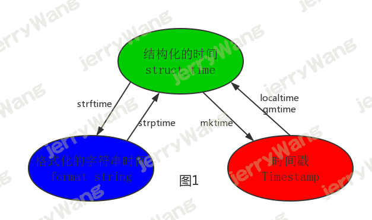
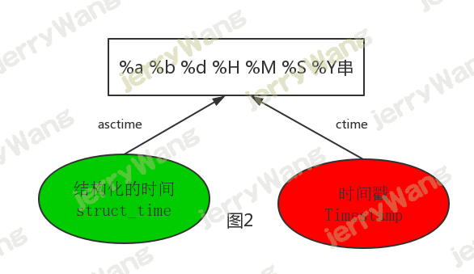
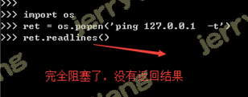
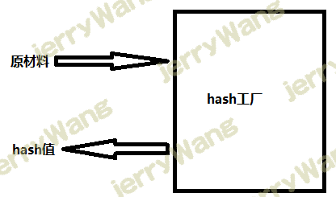
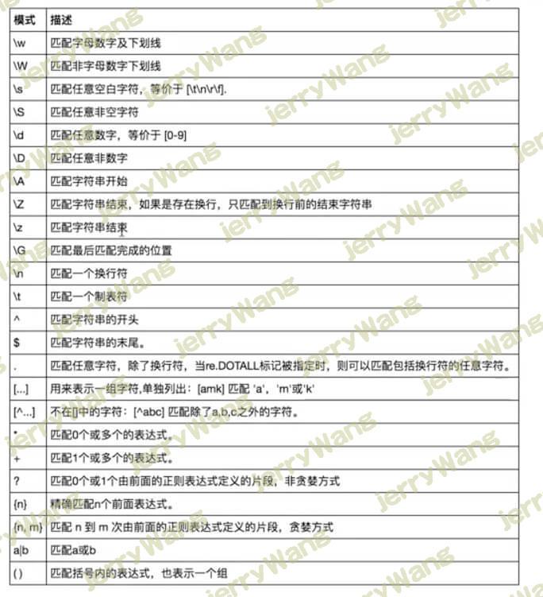

time与datetime模块 在Python中，通常有这几种方式来表示时间：
时间戳(timestamp)：通常来说，时间戳表示的是从1970年1月1日00:00:00开始按秒计算的偏移量。我们运行“type(time.time())”，返回的是float类型。 格式化的时间字符串(Format String) 结构化的时间(struct_time)：struct_time元组共有9个元素共九个元素:(年，月，日，时，分，秒，一年中第几周，一年中第几天，夏令时) 1 2 3 4 5 6 7 import timeprint (time.time()) print (time.strftime("%Y-%m-%d %X" )) print (time.localtime()) print (time.gmtime())
格式化字符串的时间格式 ：
1 2 3 4 5 6 7 8 9 10 11 12 13 14 15 16 17 18 19 20 21 22 23 %a Locale’s abbreviated weekday name. %A Locale’s full weekday name. %b Locale’s abbreviated month name. %B Locale’s full month name. %c Locale’s appropriate date and time representation. %d Day of the month as a decimal number [01,31 ]. %H Hour (24 -hour clock) as a decimal number [00 ,23 ]. %I Hour (12 -hour clock) as a decimal number [01,12 ]. %j Day of the year as a decimal number [001,366 ]. %m Month as a decimal number [01,12 ]. %M Minute as a decimal number [00 ,59 ]. %p Locale’s equivalent of either AM or PM. (1 ) %S Second as a decimal number [00 ,61 ]. (2 ) %U Week number of the year (Sunday as the first day of the week) as a decimal number [00 ,53 ]. All days in a new year preceding the first Sunday are considered to be in week 0. (3 ) %w Weekday as a decimal number [0 (Sunday),6 ]. %W Week number of the year (Monday as the first day of the week) as a decimal number [00 ,53 ]. All days in a new year preceding the first Monday are considered to be in week 0. (3 ) %x Locale’s appropriate date representation. %X Locale’s appropriate time representation. %y Year without century as a decimal number [00 ,99 ]. %Y Year with century as a decimal number. %z Time zone offset indicating a positive or negative time difference from UTC/GMT of the form +HHMM or -HHMM, where H represents decimal hour digits and M represents decimal minute digits [-23 :59 , +23 :59 ]. %Z Time zone name (no characters if no time zone exists). %% A literal '%' character.
其中计算机认识的时间只能是’时间戳’格式，而程序员可处理的或者说人类能看懂的时间有: ‘格式化的时间字符串’，’结构化的时间’ ，于是有了下图的转换关系

1 2 3 4 5 6 7 8 9 10 11 12 13 14 15 16 17 18 19 20 21 22 23 time.localtime() time.localtime(1473525444.037215 ) print (time.mktime(time.localtime()))print (time.strftime("%Y-%m-%d %X" , time.localtime()))print (time.strptime('2011-05-05 16:37:06' , '%Y-%m-%d %X' ))

1 2 3 4 5 6 7 8 9 print (time.asctime())print (time.ctime()) print (time.ctime(time.time()))
datetime模块
1 2 3 4 5 6 7 8 9 10 11 12 13 14 15 import datetimeprint ((datetime.datetime.strptime('20160311' ,"%Y%m%d" )+datetime.timedelta(-1 )).strftime('%Y%m%d' ))
random模块 1 2 3 4 5 6 7 8 9 10 11 12 13 14 15 16 17 import random print (random.random()) print (random.randint(1 ,3 )) print (random.randrange(1 ,3 )) print (random.choice([1 ,'23' ,[4 ,5 ]])) print (random.sample([1 ,'23' ,[4 ,5 ]],2 )) print (random.uniform(1 ,3 ))item=[1 ,3 ,5 ,7 ,9 ] random.shuffle(item) print (item)
生成随机验证码
1 2 3 4 5 6 7 8 9 10 import randomdef make_code (n ): res='' for i in range (n): s1=chr (random.randint(65 ,90 )) s2=str (random.randint(0 ,9 )) res+=random.choice([s1,s2]) return res print (make_code(9 ))
os模块 os模块是与操作系统交互的一个接口
1 2 3 4 5 6 7 8 9 10 11 12 13 14 15 16 17 18 19 20 21 22 23 24 25 26 27 28 29 30 31 32 33 34 os.getcwd() 获取当前工作目录，即当前python脚本工作的目录路径 os.chdir("dirname" ) 改变当前脚本工作目录；相当于shell下cd os.curdir 返回当前目录: ('.' ) os.pardir 获取当前目录的父目录字符串名：('..' ) os.makedirs('dirname1/dirname2' ) 可生成多层递归目录 os.removedirs('dirname1' ) 若目录为空，则删除，并递归到上一级目录，如若也为空，则删除，依此类推 os.mkdir('dirname' ) 生成单级目录；相当于shell中mkdir dirname os.rmdir('dirname' ) 删除单级空目录，若目录不为空则无法删除，报错；相当于shell中rmdir dirname os.listdir('dirname' ) 列出指定目录下的所有文件和子目录，包括隐藏文件，并以列表方式打印 os.remove() 删除一个文件 os.rename("oldname" ,"newname" ) 重命名文件/目录 os.stat('path/filename' ) 获取文件/目录信息 os.sep 输出操作系统特定的路径分隔符，win下为"\\" ,Linux下为"/" os.linesep 输出当前平台使用的行终止符，win下为"\t\n" ,Linux下为"\n" os.pathsep 输出用于分割文件路径的字符串 win下为;,Linux下为: os.name 输出字符串指示当前使用平台。win->'nt' ; Linux->'posix' os.system("bash command" ) 运行shell命令，直接显示 os.popen(command[, mode[, bufsize]]) command -- 使用的命令。 mode -- 模式权限可以是 'r' (默认) 或 'w' 。 bufsize -- 指明了文件需要的缓冲大小：0 意味着无缓冲；1 意味着行缓冲；其它正值表示使用参数大小的缓冲（大概值，以字节为单位）。负的bufsize意味着使用系统的默认值，一般来说，对于tty设备，它是行缓冲；对于其它文件，它是全缓冲。如果没有改参数，使用系统的默认值。 os.environ 获取系统环境变量 os.path.abspath(path) 返回path规范化的绝对路径 os.path.split(path) 将path分割成目录和文件名二元组返回 os.path.dirname(path) 返回path的目录。其实就是os.path.split(path)的第一个元素 os.path.basename(path) 返回path最后的文件名。如何path以／或\结尾，那么就会返回空值。即os.path.split(path)的第二个元素 os.path.exists(path) 如果path存在，返回True ；如果path不存在，返回False os.path.isabs(path) 如果path是绝对路径，返回True os.path.isfile(path) 如果path是一个存在的文件，返回True 。否则返回False os.path.isdir(path) 如果path是一个存在的目录，则返回True 。否则返回False os.path.join(path1[, path2[, ...]]) 将多个路径组合后返回，第一个绝对路径之前的参数将被忽略 os.path.getatime(path) 返回path所指向的文件或者目录的最后存取时间 os.path.getmtime(path) 返回path所指向的文件或者目录的最后修改时间 os.path.getsize(path) 返回path的大小
1 2 3 4 5 6 7 8 9 10 11 12 在Linux和Mac平台上，该函数会原样返回path，在windows平台上会将路径中所有字符转换为小写，并将所有斜杠转换为饭斜杠。 >>> os.path.normcase('c:/windows\\system32\\' ) 'c:\\windows\\system32\\' 规范化路径，如..和/ >>> os.path.normpath('c://windows\\System32\\../Temp/' ) 'c:\\windows\\Temp' >>> a='/Users/jieli/test1/\\\a1/\\\\aa.py/../..' >>> print (os.path.normpath(a))/Users/jieli/test1
1 2 3 4 5 6 7 8 9 10 11 12 13 14 15 16 os路径处理 import osimport os,syspossible_topdir = os.path.normpath(os.path.join( os.path.abspath(__file__), os.pardir, os.pardir, os.pardir )) sys.path.insert(0 ,possible_topdir) os.path.dirname(os.path.dirname(os.path.dirname(os.path.abspath(__file__))))
python调用Shell脚本 有两种方法：os.system()和os.popen()
前者返回值是脚本的退出状态码，后者的返回值是脚本执行过程中的输出内容
1 2 3 4 5 6 7 8 9 10 11 12 13 14 15 >>> import os>>> s=os.system("ls" ) home lost+found mysql py36.tgz py.tgz release scripts server.tgz swapfile1 test3 web >>> s 0 >>> p=os.popen("ls" ) >>> p<os._wrap_close object at 0x2b31da178710 > >>> p.readlines()['home\n' , 'lost+found\n' , 'mysql\n' , 'py36.tgz\n' , 'py.tgz\n' , 'release\n' , 'scripts\n' , 'server.tgz\n' , 'swapfile1\n' , 'test3\n' , 'web\n' ] >>> p.read() '' >>> p=os.popen("ls" )>>> p.read()'home\nlost+found\nmysql\npy36.tgz\npy.tgz\nrelease\nscripts\nserver.tgz\nswapfile1\ntest3\nweb\n'
os.popen()可以实现一个“管道”，从这个命令获取的值可以继续被使用。因为它返回一个文件对象，可以对这个文件对象进行相关的操作。
os.popen()知识点梳理:
注意：返回值是文件对象 ，既然是文件对象，使用完就应该关闭！网上搜一下，一大把文章提到这个os.popen都是忘记关闭文件对象的。 所以，推荐的写法是：
1 2 with os.popen(command, "r") as p: r = p.read()
非阻塞
通俗的讲，非阻塞就是os.popen不会等cmd命令执行完毕就继续下面的代码了.
那如何让命令执行完后，再执行下一句呢？
处理方法是使用read()或readlines()对命令的执行结果进行读操作。
完全阻塞
上面写了该函数是非阻塞的，现在怎么又变成完全阻塞的呢？感觉一头雾水了吧。本质上os.popen是非阻塞的，为了实现阻塞的效果，我们使用read()或readlines()对命令结果进行读，由此产生了阻塞的效果。但是，如果你的命令执行无法退出或进入交互模式，这种“读”将形成完全阻塞的情况，表现的像程序卡住了。
看下面代码实例1：

代码实例2：
使用os.popen执行sqlplus命令对数据库进行操作的场景，如果sqlplus执行失败，会进入交互模式，如图所示，此时使用readlines()读取执行结果时也会卡死，效果如上图：
os.popen()在大多数场景都是挺好用方便的，但是也有坑！！ 具体应用中，需要注意下。
建议：
在需要读取命令执行结果时，避免在命令无法退出或进入交互模式的场景应用os.popen; os.popen()无法满足需求时，可以考虑subprocess.Popen();
http://wangjieyu.cn/2020/01/07/Python/%E5%A5%87%E9%97%BB%E6%9D%82%E8%B0%88/subprocess%E6%A8%A1%E5%9D%97/
http://moyand.gitee.io//2020/01/07/Python/%E5%A5%87%E9%97%BB%E6%9D%82%E8%B0%88/subprocess%E6%A8%A1%E5%9D%97/
sys模块 1 2 3 4 5 6 sys.argv 命令行参数List ，第一个元素是程序本身路径 sys.exit(n) 退出程序，正常退出时exit(0 ) sys.version 获取Python解释程序的版本信息 sys.maxint 最大的Int值 sys.path 返回模块的搜索路径，初始化时使用PYTHONPATH环境变量的值 sys.platform 返回操作系统平台名称
1 2 3 4 5 6 7 8 9 10 11 12 13 14 15 16 17 18 19 20 21 22 23 24 25 26 27 28 29 30 31 32 33 34 35 36 37 38 39 40 41 42 43 [ [ [ [ print ('[%-15s]' %'#' )print ('[%-15s]' %'##' )print ('[%-15s]' %'###' )print ('[%-15s]' %'####' )print ('%s%%' %(100 )) print ('[%%-%ds]' %50 ) print (('[%%-%ds]' %50 ) %'#' )print (('[%%-%ds]' %50 ) %'##' )print (('[%%-%ds]' %50 ) %'###' )import sysimport timedef progress (percent,width=50 ): if percent >= 1 : percent=1 show_str=('[%%-%ds]' %width) %(int (width*percent)*'#' ) print ('\r%s %d%%' %(show_str,int (100 *percent)),file=sys.stdout,flush=True ,end='' ) data_size=1025 recv_size=0 while recv_size < data_size: time.sleep(0.1 ) recv_size+=1024 percent=recv_size/data_size progress(percent,width=70 )
shutil模块 高级的 文件、文件夹、压缩包 处理模块
shutil.copyfileobj(fsrc, fdst[, length])
将文件内容拷贝到另一个文件中
1 2 3 import shutil shutil.copyfileobj(open ('old.xml' ,'r' ), open ('new.xml' , 'w' ))
shutil.copyfile(src, dst)
拷贝文件
1 shutil.copyfile('f1.log' , 'f2.log' )
shutil.copymode(src, dst)
仅拷贝权限。内容、组、用户均不变
1 shutil.copymode('f1.log' , 'f2.log' )
shutil.copystat(src, dst)
仅拷贝状态的信息，包括：mode bits, atime, mtime, flags
1 shutil.copystat('f1.log' , 'f2.log' )
shutil.copy(src, dst)
拷贝文件和权限
1 2 3 import shutil shutil.copy('f1.log' , 'f2.log' )
shutil.copy2(src, dst)
拷贝文件和状态信息
1 2 3 import shutil shutil.copy2('f1.log' , 'f2.log' )
shutil.ignore_patterns(\*patterns)
shutil.copytree(src, dst, symlinks=False, ignore=None)
递归的去拷贝文件夹
1 2 3 import shutilshutil.copytree('folder1' , 'folder2' , ignore=shutil.ignore_patterns('*.pyc' , 'tmp*' ))
拷贝软连接
1 2 3 4 5 6 import shutilshutil.copytree('f1' , 'f2' , symlinks=True , ignore=shutil.ignore_patterns('*.pyc' , 'tmp*' )) ''' 通常的拷贝都把软连接拷贝成硬链接，即对待软连接来说，创建新的文件
shutil.rmtree(path[, ignore_errors[, onerror]])
递归的去删除文件
1 2 3 import shutil shutil.rmtree('folder1' )
shutil.move(src, dst)
递归的去移动文件，它类似mv命令，其实就是重命名。
1 2 3 import shutil shutil.move('folder1' , 'folder3' )
shutil.make_archive(base_name, format,...)
创建压缩包并返回文件路径，例如：zip、tar
创建压缩包并返回文件路径，例如：zip、tar
base_name： 压缩包的文件名，也可以是压缩包的路径。只是文件名时，则保存至当前目录，否则保存至指定路径， format： 压缩包种类，“zip”, “tar”, “bztar”，“gztar” root_dir： 要压缩的文件夹路径（默认当前目录） owner： 用户，默认当前用户 group： 组，默认当前组 logger： 用于记录日志，通常是logging.Logger对象 1 2 3 4 5 6 7 8 import shutilret = shutil.make_archive("data_bak" , 'gztar' , root_dir='/data' ) import shutilret = shutil.make_archive("/tmp/data_bak" , 'gztar' , root_dir='/data' )
shutil 对压缩包的处理是调用 ZipFile 和 TarFile 两个模块来进行的，详细：
zipfile压缩解压缩
1 2 3 4 5 6 7 8 9 10 11 12 import zipfilez = zipfile.ZipFile('laxi.zip' , 'w' ) z.write('a.log' ) z.write('data.data' ) z.close() z = zipfile.ZipFile('laxi.zip' , 'r' ) z.extractall(path='.' ) z.close()
tarfile压缩解压缩
1 2 3 4 5 6 7 8 9 10 11 12 13 import tarfile>>> t=tarfile.open ('/tmp/allen.tar' ,'w' )>>> t.add('/test1/a.py' ,arcname='a.bak' )>>> t.add('/test1/b.py' ,arcname='b.bak' )>>> t.close()>>> t=tarfile.open ('/tmp/allen.tar' ,'r' )>>> t.extractall('/allen' )>>> t.close()
json&pickle模块 之前我们学习过用eval内置方法可以将一个字符串转成python对象，不过，eval方法是有局限性的，对于普通的数据类型，json.loads和eval都能用，但遇到特殊类型的时候，eval就不管用了,所以eval的重点还是通常用来执行一个字符串表达式，并返回表达式的值。
1 2 3 4 import jsonx="[null,true,false,1]" print (eval (x)) print (json.loads(x))
什么是序列化？ 我们把对象(变量)从内存中变成可存储或传输的过程称之为序列化，在Python中叫pickling，在其他语言中也被称之为serialization，marshalling，flattening等等，都是一个意思。
为什么要序列化？ 1：持久保存状态
需知一个软件/程序的执行就在处理一系列状态的变化，在编程语言中，’状态’会以各种各样有结构的数据类型(也可简单的理解为变量)的形式被保存在内存中。
内存是无法永久保存数据的，当程序运行了一段时间，我们断电或者重启程序，内存中关于这个程序的之前一段时间的数据（有结构）都被清空了。
在断电或重启程序之前将程序当前内存中所有的数据都保存下来（保存到文件中），以便于下次程序执行能够从文件中载入之前的数据，然后继续执行，这就是序列化。
具体的来说，你玩使命召唤闯到了第13关，你保存游戏状态，关机走人，下次再玩，还能从上次的位置开始继续闯关。或如，虚拟机状态的挂起等。
2：跨平台数据交互
序列化之后，不仅可以把序列化后的内容写入磁盘，还可以通过网络传输到别的机器上，如果收发的双方约定好实用一种序列化的格式，那么便打破了平台/语言差异化带来的限制，实现了跨平台数据交互。
反过来，把变量内容从序列化的对象重新读到内存里称之为反序列化，即unpickling。
如何序列化之json和pickle：
json 如果我们要在不同的编程语言之间传递对象，就必须把对象序列化为标准格式，比如XML，但更好的方法是序列化为JSON，因为JSON表示出来就是一个字符串，可以被所有语言读取，也可以方便地存储到磁盘或者通过网络传输。JSON不仅是标准格式，并且比XML更快，而且可以直接在Web页面中读取，非常方便。
JSON表示的对象就是标准的JavaScript语言的对象，JSON和Python内置的数据类型对应如下：
1 2 3 4 5 6 7 8 9 10 11 12 13 14 15 16 1 import json 2 3 dic={'name' :'alvin' ,'age' :23 ,'sex' :'male' } 4 print (type (dic)) 5 6 j=json.dumps(dic) 7 print (type (j)) 8 9 10 f=open ('序列化对象' ,'w' )11 f.write(j) 12 f.close()13 14 import json15 f=open ('序列化对象' )16 data=json.loads(f.read())
注意点
1 2 3 4 5 6 7 8 9 import jsondct='{"1":"111"}' print (json.loads(dct))
pickle
1 2 3 4 5 6 7 8 9 10 11 12 13 14 15 16 17 18 19 20 21 22 1 import pickle 2 3 dic={'name' :'alvin' ,'age' :23 ,'sex' :'male' } 4 5 print (type (dic)) 6 7 j=pickle.dumps(dic) 8 print (type (j)) 9 10 11 f=open ('序列化对象_pickle' ,'wb' )12 f.write(j) 13 14 f.close()15 16 import pickle17 f=open ('序列化对象_pickle' ,'rb' )18 19 data=pickle.loads(f.read())20 21 22 print (data['age' ])
Pickle的问题和所有其他编程语言特有的序列化问题一样，就是它只能用于Python，并且可能不同版本的Python彼此都不兼容，因此，只能用Pickle保存那些不重要的数据，不能成功地反序列化也没关系。
json&pickle 的区别 json是可以在不同语言之间交换数据的，而pickle只在python之间使用。
json只能序列化最基本的数据类型，而pickle可以序列化所有的数据类型，包括类，函数都可以序列化。
json模块和picle模块都有 dumps、dump、loads、load四种方法，而且用法一样。
shelve模块 shelve模块比pickle模块简单，只有一个open函数，返回类似字典的对象，可读可写;key必须为字符串，而值可以是python所支持的数据类型
1 2 3 4 5 6 7 8 9 import shelvef=shelve.open (r'sheve.txt' ) print (f['stu1_info' ]['hobby' ])f.close()
xml模块 xml是实现不同语言或程序之间进行数据交换的协议，跟json差不多，但json使用起来更简单，不过，古时候，在json还没诞生的黑暗年代，大家只能选择用xml呀，至今很多传统公司如金融行业的很多系统的接口还主要是xml。
xml的格式如下，就是通过<>节点来区别数据结构的:
xml数据
1 2 3 4 5 6 7 8 9 10 11 12 13 14 15 16 17 18 19 20 21 22 23 <?xml version="1.0" ?> <data> <country name="Liechtenstein" > <rank updated="yes" >2 </rank> <year>2008 </year> <gdppc>141100 </gdppc> <neighbor name="Austria" direction="E" /> <neighbor name="Switzerland" direction="W" /> </country> <country name="Singapore" > <rank updated="yes" >5 </rank> <year>2011 </year> <gdppc>59900 </gdppc> <neighbor name="Malaysia" direction="N" /> </country> <country name="Panama" > <rank updated="yes" >69 </rank> <year>2011 </year> <gdppc>13600 </gdppc> <neighbor name="Costa Rica" direction="W" /> <neighbor name="Colombia" direction="E" /> </country> </data>
xml协议在各个语言里的都 是支持的，在python中可以用以下模块操作xml：
1 2 3 4 5 6 7 8 9 10 11 12 13 14 15 16 17 18 19 20 21 22 23 24 25 26 27 28 29 30 31 32 33 34 35 36 37 38 import xml.etree.ElementTree as ET tree = ET.parse("xmltest.xml" ) root = tree.getroot() print (root.tag) for child in root: print ('========>' ,child.tag,child.attrib,child.attrib['name' ]) for i in child: print (i.tag,i.attrib,i.text) for node in root.iter ('year' ): print (node.tag,node.text) import xml.etree.ElementTree as ET tree = ET.parse("xmltest.xml" ) root = tree.getroot() for node in root.iter ('year' ): new_year=int (node.text)+1 node.text=str (new_year) node.set ('updated' ,'yes' ) node.set ('version' ,'1.0' ) tree.write('test.xml' ) for country in root.findall('country' ): rank = int (country.find('rank' ).text) if rank > 50 : root.remove(country) tree.write('output.xml' )
1 2 3 4 5 6 7 8 9 10 11 12 13 import xml.etree.ElementTree as ETtree = ET.parse("a.xml" ) root=tree.getroot() for country in root.findall('country' ): for year in country.findall('year' ): if int (year.text) > 2000 : year2=ET.Element('year2' ) year2.text='新年' year2.attrib={'update' :'yes' } country.append(year2) tree.write('a.xml.swap' )
自己创建xml文档：
1 2 3 4 5 6 7 8 9 10 11 12 13 14 15 16 import xml.etree.ElementTree as ET new_xml = ET.Element("namelist" ) name = ET.SubElement(new_xml,"name" ,attrib={"enrolled" :"yes" }) age = ET.SubElement(name,"age" ,attrib={"checked" :"no" }) sex = ET.SubElement(name,"sex" ) sex.text = '33' name2 = ET.SubElement(new_xml,"name" ,attrib={"enrolled" :"no" }) age = ET.SubElement(name2,"age" ) age.text = '19' et = ET.ElementTree(new_xml) et.write("test.xml" , encoding="utf-8" ,xml_declaration=True ) ET.dump(new_xml)
configparser模块 配置文件如下：
1 2 3 4 5 6 7 8 9 10 11 12 [section1] k1 = v1 k2:v2 user=allen age=18 is_admin=true salary=31 [section2] k1 = v1
读取 1 2 3 4 5 6 7 8 9 10 11 12 13 14 15 16 17 18 19 20 21 22 23 24 25 26 27 28 29 30 31 32 import configparserconfig=configparser.ConfigParser() config.read('a.cfg' ) res=config.sections() print (res)options=config.options('section1' ) print (options) item_list=config.items('section1' ) print (item_list) val=config.get('section1' ,'user' ) print (val) val1=config.getint('section1' ,'age' ) print (val1) val2=config.getboolean('section1' ,'is_admin' ) print (val2) val3=config.getfloat('section1' ,'salary' ) print (val3)
改写 1 2 3 4 5 6 7 8 9 10 11 12 13 14 15 16 17 18 19 20 21 22 23 24 25 26 27 28 29 30 import configparserconfig=configparser.ConfigParser() config.read('a.cfg' ,encoding='utf-8' ) config.remove_section('section2' ) config.remove_option('section1' ,'k1' ) config.remove_option('section1' ,'k2' ) print (config.has_section('section1' ))print (config.has_option('section1' ,'' ))config.add_section('allen' ) config.set ('allen' ,'name' ,'allen' ) config.set ('allen' ,'age' ,18 ) config.write(open ('a.cfg' ,'w' ))
基于上述方法添加一个ini文档
1 2 3 4 5 6 7 8 9 10 11 12 13 14 15 16 import configparser config = configparser.ConfigParser() config["DEFAULT" ] = {'ServerAliveInterval' : '45' , 'Compression' : 'yes' , 'CompressionLevel' : '9' } config['bitbucket.org' ] = {} config['bitbucket.org' ]['User' ] = 'hg' config['topsecret.server.com' ] = {} topsecret = config['topsecret.server.com' ] topsecret['Host Port' ] = '50022' topsecret['ForwardX11' ] = 'no' config['DEFAULT' ]['ForwardX11' ] = 'yes' with open ('example.ini' , 'w' ) as configfile: config.write(configfile)
hashlib模块 hash算法就像一座工厂，工厂接收你送来的原材料（可以用m.update()为工厂运送原材料），经过加工返回的产品就是hash值

1 2 3 4 5 6 7 8 9 10 11 12 13 14 15 16 17 18 19 import hashlib m=hashlib.md5() m.update('hello' .encode('utf8' )) print (m.hexdigest()) m.update('alvin' .encode('utf8' )) print (m.hexdigest()) m2=hashlib.md5() m2.update('helloalvin' .encode('utf8' )) print (m2.hexdigest()) ''' 注意：把一段很长的数据update多次，与一次update这段长数据，得到的结果一样 但是update多次为校验大文件提供了可能。 '''
以上加密算法虽然依然非常厉害，但时候存在缺陷，即：通过撞库可以反解。所以，有必要对加密算法中添加自定义key再来做加密。
1 2 3 4 5 6 7 import hashlib hash = hashlib.sha256('898oaFs09f' .encode('utf8' ))hash .update('alvin' .encode('utf8' ))print (hash .hexdigest())
模拟撞库破解密码
1 2 3 4 5 6 7 8 9 10 11 12 13 14 15 16 17 18 19 20 21 22 23 24 import hashlibpasswds=[ 'alex3714' , 'alex1313' , 'alex94139413' , 'alex123456' , '123456alex' , 'a123lex' , ] def make_passwd_dic (passwds ): dic={} for passwd in passwds: m=hashlib.md5() m.update(passwd.encode('utf-8' )) dic[passwd]=m.hexdigest() return dic def break_code (cryptograph,passwd_dic ): for k,v in passwd_dic.items(): if v == cryptograph: print ('密码是===>\033[46m%s\033[0m' %k) cryptograph='aee949757a2e698417463d47acac93df' break_code(cryptograph,make_passwd_dic(passwds))
python 还有一个 hmac 模块，它内部对我们创建 key 和 内容 进行进一步的处理然后再加密:
1 2 3 4 import hmach = hmac.new('alvin' .encode('utf8' )) h.update('hello' .encode('utf8' )) print (h.hexdigest())
注意！注意！注意
1 2 3 4 5 6 7 8 9 10 11 12 13 14 15 16 17 18 19 20 21 22 23 import hmach1=hmac.new(b'allen' ) h1.update(b'hello' ) h1.update(b'world' ) print (h1.hexdigest())h2=hmac.new(b'allen' ) h2.update(b'helloworld' ) print (h2.hexdigest())h3=hmac.new(b'allenhelloworld' ) print (h3.hexdigest())''' f1bf38d054691688f89dcd34ac3c27f2 f1bf38d054691688f89dcd34ac3c27f2 bcca84edd9eeb86f30539922b28f3981 '''
suprocess模块 1 2 3 4 5 6 7 8 9 10 11 12 13 14 15 16 17 18 19 20 21 22 23 24 25 26 27 28 29 30 31 import subprocess''' sh-3.2# ls /Users/allen/Desktop |grep txt$ mysql.txt tt.txt 事物.txt ''' res1=subprocess.Popen('ls /Users/jieli/Desktop' ,shell=True ,stdout=subprocess.PIPE) res=subprocess.Popen('grep txt$' ,shell=True ,stdin=res1.stdout, stdout=subprocess.PIPE) print (res.stdout.read().decode('utf-8' ))res1=subprocess.Popen('ls /Users/jieli/Desktop |grep txt$' ,shell=True ,stdout=subprocess.PIPE) print (res1.stdout.read().decode('utf-8' ))import subprocessres1=subprocess.Popen(r'dir C:\Users\Administrator\PycharmProjects\test\函数备课' ,shell=True ,stdout=subprocess.PIPE) res=subprocess.Popen('findstr test*' ,shell=True ,stdin=res1.stdout, stdout=subprocess.PIPE) print (res.stdout.read().decode('gbk' ))
详细参考官网
logging模块 日志级别 1 2 3 4 5 6 CRITICAL = 50 ERROR = 40 WARNING = 30 INFO = 20 DEBUG = 10 NOTSET = 0
默认级别为warning，默认打印到终端 1 2 3 4 5 6 7 8 9 10 11 12 13 import logginglogging.debug('调试debug' ) logging.info('消息info' ) logging.warning('警告warn' ) logging.error('错误error' ) logging.critical('严重critical' ) ''' WARNING:root:警告warn ERROR:root:错误error CRITICAL:root:严重critical '''
为logging模块指定全局配置，针对所有logger有效，控制打印到文件中 logging.basicConfig()
1 2 3 4 5 6 7 8 9 10 11 12 13 14 15 16 17 18 19 20 21 22 23 24 25 26 27 28 29 30 31 32 33 34 35 36 37 38 39 40 41 42 可在logging.basicConfig()函数中通过具体参数来更改logging模块默认行为，可用参数有 filename：用指定的文件名创建FiledHandler（后边会具体讲解handler的概念），这样日志会被存储在指定的文件中。 filemode：文件打开方式，在指定了filename时使用这个参数，默认值为“a”还可指定为“w”。 format ：指定handler使用的日志显示格式。 datefmt：指定日期时间格式。 level：设置rootlogger（后边会讲解具体概念）的日志级别 stream：用指定的stream创建StreamHandler。可以指定输出到sys.stderr,sys.stdout或者文件，默认为sys.stderr。若同时列出了filename和stream两个参数，则stream参数会被忽略。 %(name)s：Logger的名字，并非用户名，详细查看 %(levelno)s：数字形式的日志级别 %(levelname)s：文本形式的日志级别 %(pathname)s：调用日志输出函数的模块的完整路径名，可能没有 %(filename)s：调用日志输出函数的模块的文件名 %(module)s：调用日志输出函数的模块名 %(funcName)s：调用日志输出函数的函数名 %(lineno)d：调用日志输出函数的语句所在的代码行 %(created)f：当前时间，用UNIX标准的表示时间的浮 点数表示 %(relativeCreated)d：输出日志信息时的，自Logger创建以 来的毫秒数 %(asctime)s：字符串形式的当前时间。默认格式是 “2003 -07-08 16 :49 :45 ,896 ”。逗号后面的是毫秒 %(thread)d：线程ID。可能没有 %(threadName)s：线程名。可能没有 %(process)d：进程ID。可能没有 %(message)s：用户输出的消息
1 2 3 4 5 6 7 8 9 10 11 12 13 14 15 16 17 18 19 20 21 22 23 24 25 26 27 28 29 30 31 32 33 34 35 36 37 38 39 40 41 42 43 44 45 46 47 48 49 50 51 52 53 54 55 56 可在logging.basicConfig()函数中可通过具体参数来更改logging模块默认行为，可用参数有 filename：用指定的文件名创建FiledHandler（后边会具体讲解handler的概念），这样日志会被存储在指定的文件中。 filemode：文件打开方式，在指定了filename时使用这个参数，默认值为“a”还可指定为“w”。 format ：指定handler使用的日志显示格式。datefmt：指定日期时间格式。 level：设置rootlogger（后边会讲解具体概念）的日志级别 stream：用指定的stream创建StreamHandler。可以指定输出到sys.stderr,sys.stdout或者文件，默认为sys.stderr。若同时列出了filename和stream两个参数，则stream参数会被忽略。 format 参数中可能用到的格式化串：%(name)s Logger的名字 %(levelno)s 数字形式的日志级别 %(levelname)s 文本形式的日志级别 %(pathname)s 调用日志输出函数的模块的完整路径名，可能没有 %(filename)s 调用日志输出函数的模块的文件名 %(module)s 调用日志输出函数的模块名 %(funcName)s 调用日志输出函数的函数名 %(lineno)d 调用日志输出函数的语句所在的代码行 %(created)f 当前时间，用UNIX标准的表示时间的浮 点数表示 %(relativeCreated)d 输出日志信息时的，自Logger创建以 来的毫秒数 %(asctime)s 字符串形式的当前时间。默认格式是 “2003 -07-08 16 :49 :45 ,896 ”。逗号后面的是毫秒 %(thread)d 线程ID。可能没有 %(threadName)s 线程名。可能没有 %(process)d 进程ID。可能没有 %(message)s用户输出的消息 import logginglogging.basicConfig(filename='access.log' , format ='%(asctime)s - %(name)s - %(levelname)s -%(module)s: %(message)s' , datefmt='%Y-%m-%d %H:%M:%S %p' , level=10 ) logging.debug('调试debug' ) logging.info('消息info' ) logging.warning('警告warn' ) logging.error('错误error' ) logging.critical('严重critical' ) access.log内容: 2017 -07-28 20 :32 :17 PM - root - DEBUG -test: 调试debug2017 -07-28 20 :32 :17 PM - root - INFO -test: 消息info2017 -07-28 20 :32 :17 PM - root - WARNING -test: 警告warn2017 -07-28 20 :32 :17 PM - root - ERROR -test: 错误error2017 -07-28 20 :32 :17 PM - root - CRITICAL -test: 严重criticalpart2: 可以为logging模块指定模块级的配置,即所有logger的配置
原理图：https://pan.baidu.com/s/1skWyTT7
1 2 3 4 5 6 7 8 9 10 11 12 13 14 15 16 17 18 19 20 21 22 23 24 25 26 27 28 29 30 31 32 33 34 35 36 37 38 39 40 41 42 43 44 45 46 47 48 ''' critical=50 error =40 warning =30 info = 20 debug =10 ''' import logginglogger=logging.getLogger(__file__) h1=logging.FileHandler('t1.log' ) h2=logging.FileHandler('t2.log' ) h3=logging.StreamHandler() formmater1=logging.Formatter('%(asctime)s - %(name)s - %(levelname)s -%(module)s: %(message)s' , datefmt='%Y-%m-%d %H:%M:%S %p' ,) formmater2=logging.Formatter('%(asctime)s : %(message)s' , datefmt='%Y-%m-%d %H:%M:%S %p' ,) formmater3=logging.Formatter('%(name)s %(message)s' ,) h1.setFormatter(formmater1) h2.setFormatter(formmater2) h3.setFormatter(formmater3) logger.addHandler(h1) logger.addHandler(h2) logger.addHandler(h3) logger.setLevel(10 ) logger.debug('debug' ) logger.info('info' ) logger.warning('warning' ) logger.error('error' ) logger.critical('critical' )
Logger与Handler的级别 logger是第一级过滤，然后才能到handler，我们可以给logger和handler同时设置level，但是需要注意的是
重要，重要，重要！！！
1 2 3 4 5 6 7 8 9 10 11 12 13 14 15 16 17 18 19 20 21 22 23 Logger is also the first to filter the message based on a level — if you set the logger to INFO, and all handlers to DEBUG, you still won't receive DEBUG messages on handlers — they' ll be rejected by the logger itself. If you set logger to DEBUG, but all handlers to INFO, you won't receive any DEBUG messages either — because while the logger says "ok, process this", the handlers reject it (DEBUG < INFO). #验证 import logging form=logging.Formatter(' %(asctime)s - %(name)s - %(levelname)s -%(module)s: %(message)s', datefmt=' %Y-%m-%d %H:%M:%S %p',) ch=logging.StreamHandler() ch.setFormatter(form) # ch.setLevel(10) ch.setLevel(20) l1=logging.getLogger(' root') # l1.setLevel(20) l1.setLevel(10) l1.addHandler(ch) l1.debug(' l1 debug')
Logger的继承（了解） 1 2 3 4 5 6 7 8 9 10 11 12 13 14 15 16 17 18 19 20 21 22 23 24 25 26 27 28 29 30 31 32 import loggingformatter=logging.Formatter('%(asctime)s - %(name)s - %(levelname)s -%(module)s: %(message)s' , datefmt='%Y-%m-%d %H:%M:%S %p' ,) ch=logging.StreamHandler() ch.setFormatter(formatter) logger1=logging.getLogger('root' ) logger2=logging.getLogger('root.child1' ) logger3=logging.getLogger('root.child1.child2' ) logger1.addHandler(ch) logger2.addHandler(ch) logger3.addHandler(ch) logger1.setLevel(10 ) logger2.setLevel(10 ) logger3.setLevel(10 ) logger1.debug('log1 debug' ) logger2.debug('log2 debug' ) logger3.debug('log3 debug' ) ''' 2017-07-28 22:22:05 PM - root - DEBUG -test: log1 debug 2017-07-28 22:22:05 PM - root.child1 - DEBUG -test: log2 debug 2017-07-28 22:22:05 PM - root.child1 - DEBUG -test: log2 debug 2017-07-28 22:22:05 PM - root.child1.child2 - DEBUG -test: log3 debug 2017-07-28 22:22:05 PM - root.child1.child2 - DEBUG -test: log3 debug 2017-07-28 22:22:05 PM - root.child1.child2 - DEBUG -test: log3 debug '''
应用 logging配置文件
1 2 3 4 5 6 7 8 9 10 11 12 13 14 15 16 17 18 19 20 21 22 23 24 25 26 27 28 29 30 31 32 33 34 35 36 37 38 39 40 41 42 43 44 45 46 47 48 49 50 51 52 53 54 55 56 57 58 59 60 61 62 63 64 65 66 67 68 69 70 71 72 73 74 75 76 77 78 """ logging配置 """ import osimport logging.configstandard_format = '[%(asctime)s][%(threadName)s:%(thread)d][task_id:%(name)s][%(filename)s:%(lineno)d]' \ '[%(levelname)s][%(message)s]' simple_format = '[%(levelname)s][%(asctime)s][%(filename)s:%(lineno)d]%(message)s' id_simple_format = '[%(levelname)s][%(asctime)s] %(message)s' logfile_dir = os.path.dirname(os.path.abspath(__file__)) logfile_name = 'all2.log' if not os.path.isdir(logfile_dir): os.mkdir(logfile_dir) logfile_path = os.path.join(logfile_dir, logfile_name) LOGGING_DIC = { 'version' : 1 , 'disable_existing_loggers' : False , 'formatters' : { 'standard' : { 'format' : standard_format }, 'simple' : { 'format' : simple_format }, }, 'filters' : {}, 'handlers' : { 'console' : { 'level' : 'DEBUG' , 'class' : 'logging.StreamHandler' , 'formatter' : 'simple' }, 'default' : { 'level' : 'DEBUG' , 'class' : 'logging.handlers.RotatingFileHandler' , 'formatter' : 'standard' , 'filename' : logfile_path, 'maxBytes' : 1024 *1024 *5 , 'backupCount' : 5 , 'encoding' : 'utf-8' , }, }, 'loggers' : { '' : { 'handlers' : ['default' , 'console' ], 'level' : 'DEBUG' , 'propagate' : True , }, }, } def load_my_logging_cfg (): logging.config.dictConfig(LOGGING_DIC) logger = logging.getLogger(__name__) logger.info('It works!' ) if __name__ == '__main__' : load_my_logging_cfg()
使用
1 2 3 4 5 6 7 8 9 10 11 12 13 14 15 16 17 18 19 20 21 22 23 24 """ MyLogging Test """ import timeimport loggingimport my_logging logger = logging.getLogger(__name__) def demo (): logger.debug("start range... time:{}" .format (time.time())) logger.info("中文测试开始。。。" ) for i in range (10 ): logger.debug("i:{}" .format (i)) time.sleep(0.2 ) else : logger.debug("over range... time:{}" .format (time.time())) logger.info("中文测试结束。。。" ) if __name__ == "__main__" : my_logging.load_my_logging_cfg() demo()
!!!关于如何拿到logger对象的详细解释！！！
1 2 3 4 5 6 7 8 9 10 11 12 13 14 15 16 17 18 19 20 21 22 23 24 25 26 27 28 29 30 31 32 33 34 35 36 37 38 39 40 41 42 43 44 45 46 47 48 49 注意注意注意： 1 、从字典加载配置：logging.config.dictConfig(settings.LOGGING_DIC) 2 、拿到logger对象来产生日志 logger对象都是配置到字典的loggers 键对应的子字典中的 按照我们对logging模块的理解，要想获取某个东西都是通过名字，也就是key来获取的 于是我们要获取不同的logger对象就是 logger=logging.getLogger('loggers子字典的key名' ) 但问题是：如果我们想要不同logger名的logger对象都共用一段配置，那么肯定不能在loggers子字典中定义n个key 'loggers' : { 'l1' : { 'handlers' : ['default' , 'console' ], 'level' : 'DEBUG' , 'propagate' : True , }, 'l2: { ' handlers': [' default', ' console' ], ' level': ' DEBUG', ' propagate': False, # 向上（更高level的logger）传递 }, ' l3': { ' handlers': [' default', ' console'], # ' level': ' DEBUG', ' propagate': True, # 向上（更高level的logger）传递 }, } #我们的解决方式是，定义一个空的key ' loggers': { ' ': { ' handlers': [' default', ' console'], ' level': ' DEBUG', ' propagate': True, }, } 这样我们再取logger对象时 logging.getLogger(__name__)，不同的文件__name__不同，这保证了打印日志时标识信息不同，但是拿着该名字去loggers里找key名时却发现找不到，于是默认使用key=' '的配置
另外一个django的配置，瞄一眼就可以，跟上面的一样
1 2 3 4 5 6 7 8 9 10 11 12 13 14 15 16 17 18 19 20 21 22 23 24 25 26 27 28 29 30 31 32 33 34 35 36 37 38 39 40 41 42 43 44 45 46 47 48 49 50 51 52 53 54 55 56 57 58 59 60 61 62 63 64 65 66 67 68 69 70 71 72 73 74 75 76 77 78 79 80 81 LOGGING = { 'version' : 1 , 'disable_existing_loggers' : False , 'formatters' : { 'standard' : { 'format' : '[%(asctime)s][%(threadName)s:%(thread)d][task_id:%(name)s][%(filename)s:%(lineno)d]' '[%(levelname)s][%(message)s]' }, 'simple' : { 'format' : '[%(levelname)s][%(asctime)s][%(filename)s:%(lineno)d]%(message)s' }, 'collect' : { 'format' : '%(message)s' } }, 'filters' : { 'require_debug_true' : { '()' : 'django.utils.log.RequireDebugTrue' , }, }, 'handlers' : { 'console' : { 'level' : 'DEBUG' , 'filters' : ['require_debug_true' ], 'class' : 'logging.StreamHandler' , 'formatter' : 'simple' }, 'default' : { 'level' : 'INFO' , 'class' : 'logging.handlers.RotatingFileHandler' , 'filename' : os.path.join(BASE_LOG_DIR, "xxx_info.log" ), 'maxBytes' : 1024 * 1024 * 5 , 'backupCount' : 3 , 'formatter' : 'standard' , 'encoding' : 'utf-8' , }, 'error' : { 'level' : 'ERROR' , 'class' : 'logging.handlers.RotatingFileHandler' , 'filename' : os.path.join(BASE_LOG_DIR, "xxx_err.log" ), 'maxBytes' : 1024 * 1024 * 5 , 'backupCount' : 5 , 'formatter' : 'standard' , 'encoding' : 'utf-8' , }, 'collect' : { 'level' : 'INFO' , 'class' : 'logging.handlers.RotatingFileHandler' , 'filename' : os.path.join(BASE_LOG_DIR, "xxx_collect.log" ), 'maxBytes' : 1024 * 1024 * 5 , 'backupCount' : 5 , 'formatter' : 'collect' , 'encoding' : "utf-8" } }, 'loggers' : { '' : { 'handlers' : ['default' , 'console' , 'error' ], 'level' : 'DEBUG' , 'propagate' : True , }, 'collect' : { 'handlers' : ['console' , 'collect' ], 'level' : 'INFO' , } }, } logger = logging.getLogger(__name__) collect_logger = logging.getLogger("collect" )
re模块 一：什么是正则？ 正则就是用一些具有特殊含义的符号组合到一起（称为正则表达式）来描述字符或者字符串的方法。或者说：正则就是用来描述一类事物的规则。 （在Python中）它内嵌在Python中，并通过 re 模块实现。正则表达式模式被编译成一系列的字节码，然后由用 C 编写的匹配引擎执行。
生活中处处都是正则：
比如我们描述：4条腿
你可能会想到的是四条腿的动物或者桌子，椅子等
继续描述：4条腿，活的
就只剩下四条腿的动物这一类了
二：常用匹配模式(元字符) http://blog.csdn.net/yufenghyc/article/details/51078107

1 2 3 4 5 6 7 8 9 10 11 12 13 14 15 16 17 18 19 20 21 22 23 24 25 26 27 28 29 30 31 32 33 34 35 36 37 38 39 40 41 42 43 44 45 46 47 48 49 50 51 52 53 54 55 56 57 58 59 60 61 62 63 64 65 66 67 68 69 70 71 72 73 74 75 76 77 78 79 80 81 82 83 84 85 86 87 88 89 import reprint (re.findall('\w' ,'hello allen 123' )) print (re.findall('\W' ,'hello allen 123' )) print (re.findall('\s' ,'hello allen 123' )) print (re.findall('\S' ,'hello allen 123' )) print (re.findall('\s' ,'hello \n allen \t 123' )) print (re.findall(r'\n' ,'hello allen \n123' )) print (re.findall(r'\t' ,'hello allen\t123' )) print (re.findall('\d' ,'hello allen 123' )) print (re.findall('\D' ,'hello allen 123' )) print (re.findall('\Ahe' ,'hello allen 123' )) print (re.findall('123\Z' ,'hello allen 123' )) print (re.findall('^h' ,'hello allen 123' )) print (re.findall('3$' ,'hello allen 123' )) print (re.findall('a.b' ,'a1b' )) print (re.findall('a.b' ,'a1b a*b a b aaab' )) print (re.findall('a.b' ,'a\nb' )) print (re.findall('a.b' ,'a\nb' ,re.S)) print (re.findall('a.b' ,'a\nb' ,re.DOTALL)) print (re.findall('ab*' ,'bbbbbbb' )) print (re.findall('ab*' ,'a' )) print (re.findall('ab*' ,'abbbb' )) print (re.findall('ab?' ,'a' )) print (re.findall('ab?' ,'abbb' )) print (re.findall('\d+\.?\d*' ,"asdfasdf123as1.13dfa12adsf1asdf3" )) print (re.findall('a.*b' ,'a1b22222222b' )) print (re.findall('a.*?b' ,'a1b22222222b' )) print (re.findall('ab+' ,'a' )) print (re.findall('ab+' ,'abbb' )) print (re.findall('ab{2}' ,'abbb' )) print (re.findall('ab{2,4}' ,'abbb' )) print (re.findall('ab{1,}' ,'abbb' )) print (re.findall('ab{0,}' ,'abbb' )) print (re.findall('a[1*-]b' ,'a1b a*b a-b' )) print (re.findall('a[^1*-]b' ,'a1b a*b a-b a=b' )) print (re.findall('a[0-9]b' ,'a1b a*b a-b a=b' )) print (re.findall('a[a-z]b' ,'a1b a*b a-b a=b aeb' )) print (re.findall('a[a-zA-Z]b' ,'a1b a*b a-b a=b aeb aEb' )) print (re.findall(r'a\\c' ,'a\c' )) print (re.findall('a\\\\c' ,'a\c' )) print (re.findall('ab+' ,'ababab123' )) print (re.findall('(ab)+123' ,'ababab123' )) print (re.findall('(?:ab)+123' ,'ababab123' )) print (re.findall('href="(.*?)"' ,'<a href="http://www.baidu.com">点击</a>' ))print (re.findall('href="(?:.*?)"' ,'<a href="http://www.baidu.com">点击</a>' ))print (re.findall('compan(?:y|ies)' ,'Too many companies have gone bankrupt, and the next one is my company' ))
1 2 3 4 5 6 7 8 9 10 11 12 13 14 15 16 17 18 19 20 21 22 23 24 25 26 27 import reprint (re.findall('e' ,'alex make love' ) ) print (re.search('e' ,'alex make love' ).group()) print (re.match('e' ,'alex make love' )) print (re.split('[ab]' ,'abcd' )) print ('===>' ,re.sub('a' ,'A' ,'alex make love' )) print ('===>' ,re.sub('a' ,'A' ,'alex make love' ,1 )) print ('===>' ,re.sub('a' ,'A' ,'alex make love' ,2 )) print ('===>' ,re.sub('^(\w+)(.*?\s)(\w+)(.*?\s)(\w+)(.*?)$' ,r'\5\2\3\4\1' ,'alex make love' )) print ('===>' ,re.subn('a' ,'A' ,'alex make love' )) obj=re.compile ('\d{2}' ) print (obj.search('abc123eeee' ).group()) print (obj.findall('abc123eeee' ))
补充
1 2 3 4 5 6 7 8 9 10 11 12 13 14 15 16 17 18 19 20 21 22 23 24 25 import reprint (re.findall("<(?P<tag_name>\w+)>\w+</(?P=tag_name)>" ,"<h1>hello</h1>" )) print (re.search("<(?P<tag_name>\w+)>\w+</(?P=tag_name)>" ,"<h1>hello</h1>" ).group()) print (re.search("<(?P<tag_name>\w+)>\w+</(?P=tag_name)>" ,"<h1>hello</h1>" ).groupdict()) print (re.search(r"<(\w+)>\w+</(\w+)>" ,"<h1>hello</h1>" ).group())print (re.search(r"<(\w+)>\w+</\1>" ,"<h1>hello</h1>" ).group())import reprint (re.findall(r"-?\d+\.\d*|(-?\d+)" ,"1-2*(60+(-40.35/5)-(-4*3))" )) print (re.findall('\D?(\-?\d+\.?\d*)' ,"1-2*(60+(-40.35/5)-(-4*3))" )) expression='1-2*((60+2*(-3-40.0/5)*(9-2*5/3+7/3*99/4*2998+10*568/14))-(-4*3)/(16-3*2))' content=re.search('\(([\-\+\*\/]*\d+\.?\d*)+\)' ,expression).group()
search与findall
1 2 3 4 5 6 7 print (re.search('\(([\+\-\*\/]*\d+\.?\d*)+\)' ,"1-12*(60+(-40.35/5)-(-4*3))" ).group()) print (re.findall('\(([\+\-\*\/]*\d+\.?\d*)+\)' ,"1-12*(60+(-40.35/5)-(-4*3))" )) print (re.search('(\d)+' ,'123' ).group()) print (re.findall('(\d)+' ,'123' ))
1 2 3 4 5 6 7 8 9 10 11 12 13 14 15 16 17 18 19 20 21 22 23 24 25 26 27 28 29 30 31 32 33 34 35 36 37 38 39 40 41 42 43 44 45 46 47 48 49 50 51 52 53 54 55 56 57 58 59 60 61 62 63 64 65 66 67 68 69 70 71 72 73 74 75 76 77 78 79 80 81 82 83 84 85 86 87 88 89 90 91 92 93 94 95 96 97 98 99 100 101 102 103 104 105 106 107 108 109 110 111 112 113 114 115 116 117 118 119 120 121 122 123 124 125 126 127 128 129 130 131 132 133 134 135 136 137 138 139 140 141 142 143 144 145 146 147 148 149 150 151 152 153 154 155 __author__ = 'Linhaifeng' import res=''' http://www.baidu.com egon@oldboyedu.com 你好 010-3141 ''' content='Hello 123 456 World_This is a Regex Demo' res=re.match('Hello\s\d\d\d\s\d{3}\s\w{10}.*Demo' ,content) print (res)print (res.group())print (res.span())content='Hello 123 456 World_This is a Regex Demo' res=re.match('^Hello.*Demo' ,content) print (res.group())content='Hello 123 456 World_This is a Regex Demo' res=re.match('^Hello\s(\d+)\s(\d+)\s.*Demo' ,content) print (res.group()) print (res.group(1 )) print (res.group(2 )) import recontent='Hello 123 456 World_This is a Regex Demo' res=re.match('^He.*(\d+).*Demo$' ,content) print (res.group(1 )) import recontent='Hello 123 456 World_This is a Regex Demo' res=re.match('^He.*?(\d+).*Demo$' ,content) print (res.group(1 )) content='''Hello 123456 World_This is a Regex Demo ''' res=re.match('He.*?(\d+).*?Demo$' ,content) print (res) res=re.match('He.*?(\d+).*?Demo$' ,content,re.S) print (res)print (res.group(1 ))content='price is $5.00' res=re.match('price is $5.00' ,content) print (res)res=re.match('price is \$5\.00' ,content) print (res) import recontent='Extra strings Hello 123 456 World_This is a Regex Demo Extra strings' res=re.match('Hello.*?(\d+).*?Demo' ,content) print (res) import recontent='Extra strings Hello 123 456 World_This is a Regex Demo Extra strings' res=re.search('Hello.*?(\d+).*?Demo' ,content) print (res.group(1 )) import recontent=''' <tbody> <tr id="4766303201494371851675" class="even "><td><div class="hd"><span class="num">1</span><div class="rk "><span class="u-icn u-icn-75"></span></div></div></td><td class="rank"><div class="f-cb"><div class="tt"><a href="/song?id=476630320"><img class="rpic" src="http://p1.music.126.net/Wl7T1LBRhZFg0O26nnR2iQ==/19217264230385030.jpg?param=50y50&quality=100"></a><span data-res-id="476630320" " ''' res=re.search('<a\shref=.*?<b\stitle="(.*?)".*?b>' ,content) print (res.group(1 ))res=re.findall('<a\shref=.*?<b\stitle="(.*?)".*?b>' ,content) for i in res: print (i) import recontent='Extra strings Hello 123 456 World_This is a Regex Demo Extra strings' content=re.sub('\d+' ,'' ,content) print (content)import recontent='Extra strings Hello 123 456 World_This is a Regex Demo Extra strings' content=re.sub('(\d+)(\s)(\d+)' ,r'\3\2\1' ,content) print (content)import recontent='Extra strings Hello 123 456 World_This is a Regex Demo Extra strings' res=re.search('Extra.*?(\d+).*strings' ,content) print (res.group(1 ))import requests,rerespone=requests.get('https://book.douban.com/' ).text print (respone)print ('======' *1000 )print ('======' *1000 )print ('======' *1000 )print ('======' *1000 )res=re.findall('<li.*?cover.*?href="(.*?)".*?title="(.*?)">.*?more-meta.*?author">(.*?)</span.*?year">(.*?)</span.*?publisher">(.*?)</span.*?</li>' ,respone,re.S) for i in res: print ('%s %s %s %s' %(i[0 ].strip(),i[1 ].strip(),i[2 ].strip(),i[3 ].strip()))
 微信
微信 支付宝
支付宝